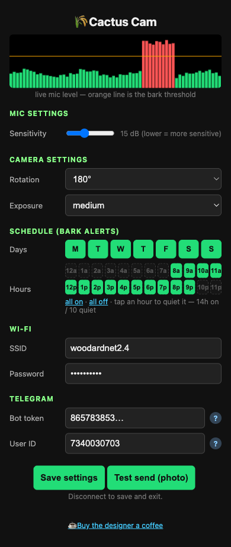

ONLINE
SIMULATED FEED
Last send
—
Timers
—
Uptime
—
XIAO ESP32S3 SENSE · FW V1.0
Latest build · v1.0
Cactus Cam
A half-dollar-size camera agent. Message it on Telegram — it answers back, snaps photos, rolls video clips, records voice notes, and keeps its own timers. No cloud, no AI model: deterministic signal processing on the board.
It also listens for barks — the barkcam pipeline rides along, so a loud dog still gets you a photo.
Chrome or Edge · no install · your saved settings are kept
Talk to it
Plain words, real actions
Every message gets an instant ack, then progress edits while it works. The parser is deterministic keywords — nothing can hang on a model call.
- 01photo — one now, or every 5 min photo on a timer (up to three at once, all rate-limited).
- 02video 10s — a real clip: frames stream to your Mac, which encodes the MP4 and posts it back.
- 03record 8s — a voice note from the board's own microphone.
- 04exposure · brightness · contrast · saturation · wb · night — tune the image from your phone.
- 05stop · status — clear timers, see what's running. It knows its limits and says so.
Setup
Two minutes, one time
After flashing, the board walks you through it. Everything is saved on the board — no account, no cloud.
- 01Power the board (USB). For 10 minutes it broadcasts an open network cactuscam-config — connect your phone to it.
- 02Open cactuscam.local in your phone's browser (or 192.168.4.1 if that doesn't resolve).
- 03Enter your home WiFi, a Telegram bot token (from @BotFather) and your user ID (from @userinfobot). Hit Save settings. Done — the board closes its access point when your phone leaves.

Other ways
Prefer the terminal?
- Download the firmware and flash with esptool:
$ esptool.py --chip esp32s3 write_flash 0x0 cactuscam-v1.0.bin - Build from source (PlatformIO) — the repo has full docs.
- Safari and Firefox don't support WebSerial — use the download above, or open this page in Chrome/Edge.